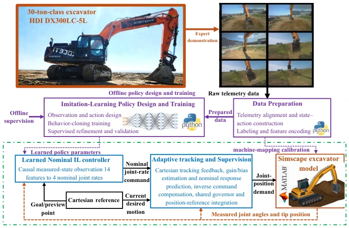

IL-ACT: Imitation Learning with Adaptive Cartesian Tracking Control for a 30-ton Excavator
Mehdi Heydari Shahna, Seihun Kim, Soyi Jung, Soohyun Park, Jouni Mattila, Joongheon Kim abspdf
论文点评Review
这篇论文给 30 吨挖掘机装了个“大脑”，但别指望它能去工地挖土，毕竟还在 Simscape 里跑。核心是把模仿学习（IL）和自适应控制（ACT）硬凑在一起，试图解决液压系统的滞后和不确定性。亮点是那个“锚定”策略和增益估计，理论上能修正误差。但吐槽点也很明显：纯仿真，没上真机；预训练权重效果参差不齐；虽然 RMSE 低了，但最大误差有时候反而高了，典型的“平均表现好，极端情况拉胯”。对于 Embodied AI 圈来说，这算是个稳健的工业控制案例，但离“端到端”还差得远，更像传统控制加了个神经网络前馈。这种“混合架构”在学术界很常见，但在工业界落地前，还得先过真机这一关，毕竟液压油的脾气可不是仿真器能完全模拟的。
—
研究动机Motivation
自主挖掘机控制难在液压执行器的滞后、耦合运动学和环境不确定性。现有工作多集中在轨迹优化 [1]、模型预测控制 [2] 或数据驱动逆控制 [3]，但往往忽略了实际液压响应的动态变化。模仿学习虽能利用专家演示 [5]-[8]，但存在分布偏移和因果混淆问题 [13]。自适应控制虽能补偿不确定性 [14]-[17]，但单独使用样本效率低。本文旨在结合 IL 的泛化能力和 ACT 的鲁棒性，解决 30 吨级挖掘机在复杂工况下的精准跟踪问题，弥补单纯 IL 在动态补偿上的不足。
—
方法Method
整体框架分离线策略训练和在线自适应跟踪。离线阶段，用操作员遥测数据训练一个 14 输入 4 输出的全连接网络，输出名义关节速率，采用“锚定”设计确保零动作时输出为零，避免漂移。在线阶段，引入自适应笛卡尔跟踪（ACT）模块：首先计算笛卡尔误差，通过反馈增益生成修正速度；其次，通过门控机制估计增益和偏置，补偿液压阀滞、摩擦等非线性响应，这是核心难点；最后，共享停止距离控制器（Governor）确保关节参考在安全范围内，防止超限。关键创新在于将名义策略与反馈校正解耦，并通过估计器动态调整控制律，而非单纯依赖神经网络拟合。这种设计既保留了 IL 的轨迹生成能力，又通过传统控制理论保证了稳定性，属于“旧瓶装新酒”的典型实践。
—

Fig. 2. IL-ACT architecture: offline policy training and validation, followed by online Cartesian feedback, gain/bias adaptation, and command supervision.